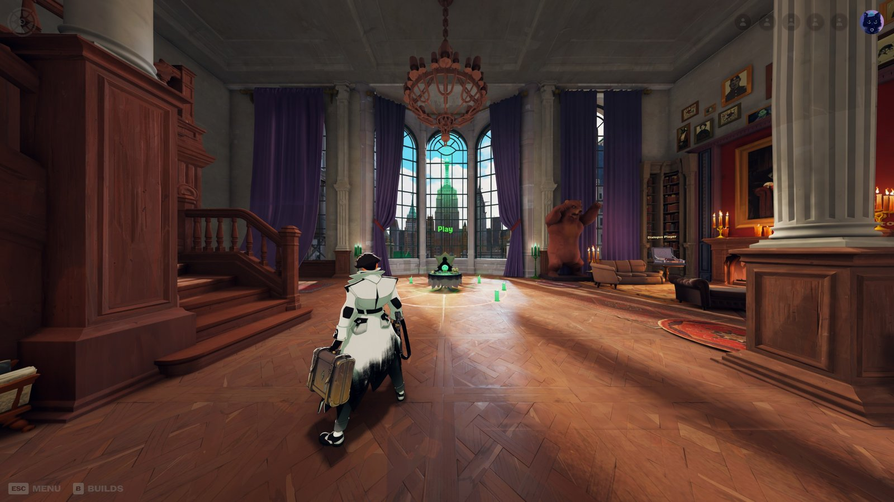
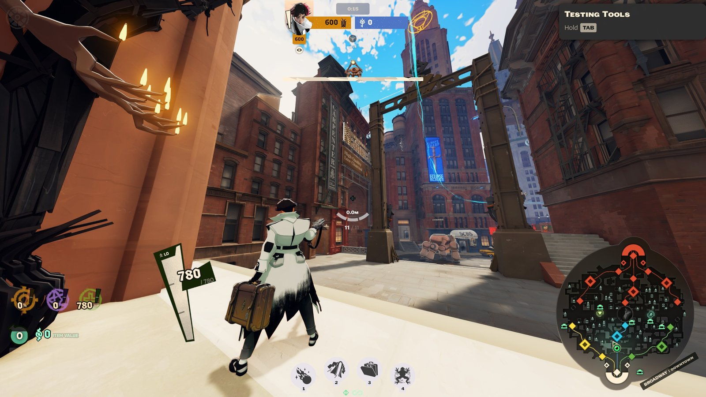
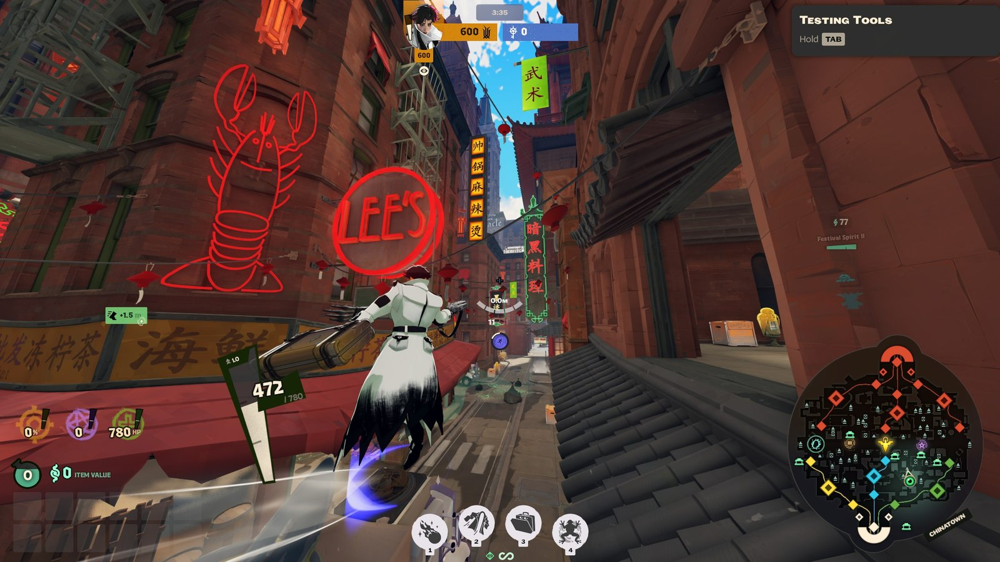

Daylock
Daytime Midtown and Hideout for Deadlock

The buttons open Deadlock Mod Manager. Or add this source by hand under Settings > Mods > Mod sources:https://notmurph.github.io/daylock/dmm-source.json
A sunny afternoon instead of the night: real sun shadows baked into the map lighting, a blue sky with clouds, and the night lamps and neon turned down. It only changes how the maps look, gameplay and cover stay the same, and it runs about 7% faster than stock.


Made by Murphy, built with Claude. GitHub